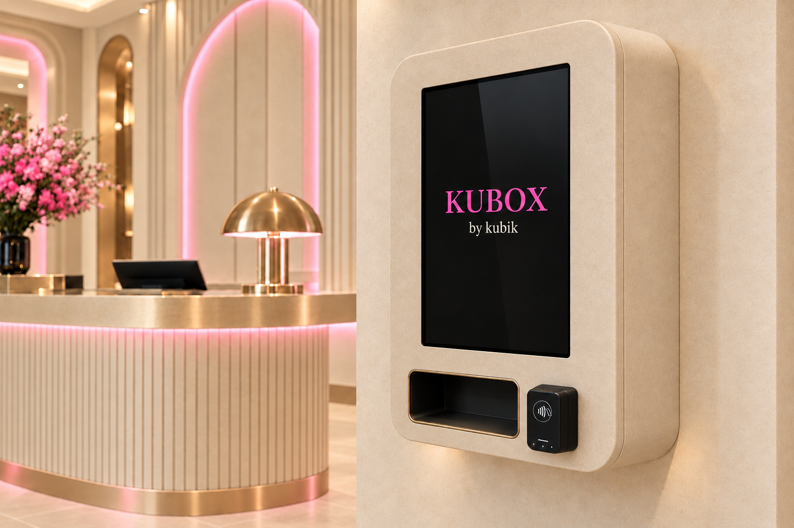

Un séjour plus agréable.
Vos voyageurs trouvent ce qui leur manque directement dans l’hôtel. Une attention pratique qui prolonge votre sens de l’hospitalité.
PENSÉE POUR VOS HÔTES. GÉRÉE POUR VOUS.
Un chargeur oublié. Une arrivée tardive.
Les essentiels de vos voyageurs sont déjà là.
Dans votre hôtel.

LE CONFORT
EST DANS
LES DÉTAILS.
Une solution adaptée à votre établissement.
L’ESSENTIEL, SUR PLACE.
Une box de produits utiles, disponible dans votre hôtel. Pour répondre aux besoins du séjour, sans détour.
Chargeurs, câbles et adaptateurs : les indispensables pour continuer sa journée, préparer un rendez-vous ou donner des nouvelles.
Kits dentaires, kits de rasage et accessoires de dépannage : une sélection pensée pour les oublis du quotidien et les besoins de vos voyageurs.
Il n’y a pas un modèle imposé à tous les hôtels. Nous choisissons avec vous le format, l’emplacement et l’assortiment adaptés à votre établissement.
Offrez une réponse aux petits imprévus de vos hôtes. Nous prenons en charge le service, pour que vos équipes restent disponibles pour l’accueil.
Vos voyageurs trouvent ce qui leur manque directement dans l’hôtel. Une attention pratique qui prolonge votre sens de l’hospitalité.
Stocks, réassort, suivi et maintenance : KUBIK s’occupe du service. Vos équipes se concentrent sur leurs hôtes, sans gérer une boutique en plus.
Du choix du modèle à son habillage, la box s’accorde à votre lieu. Une présence utile, cohérente avec l’expérience que vous avez imaginée.
Couleurs, habillage, identité visuelle : nous personnalisons la box pour qu’elle fasse naturellement partie de votre établissement.
Vous souhaitez aller plus loin ? En marque blanche, le service porte votre nom. Votre identité est au premier plan ; KUBIK opère en coulisses.
Une finition qui s’accorde à l’atmosphère de votre hôtel.
Votre nom, votre marque : une présence qui vous ressemble.
Un modèle choisi avec vous, selon votre espace et vos besoins.
Hôtel indépendant, résidence ou groupe hôtelier : construisons un service à la hauteur de votre identité.
Votre clientèle, votre univers et les besoins rencontrés à la réception. Nous partons de votre quotidien.
Modèle de box, assortiment, emplacement et personnalisation : nous dessinons la solution avec vous.
Nous organisons l’installation et la gestion du service. Le suivi et les modalités d’intervention sont définis ensemble.
EN PRATIQUE
Non. KUBIK prend en charge les stocks, le réassort et la maintenance. L’organisation et les modalités de suivi sont définies en fonction de votre établissement.
Oui. Nous pouvons personnaliser l’habillage de la box à votre identité et proposer une intégration en marque blanche : le service porte alors le nom de votre établissement.
Non. Le modèle et le format sont choisis selon votre espace, votre clientèle et l’assortiment souhaité. Chaque projet fait l’objet d’une proposition adaptée à votre établissement.
Des essentiels de voyage comme les chargeurs, adaptateurs, kits dentaires et kits de rasage. Nous définissons avec vous une sélection cohérente avec les besoins de vos hôtes.
LES BELLES ATTENTIONS COMMENCENT PAR UN ÉCHANGE.
Vous imaginez l’accueil.
Nous préparons les essentiels.
CONTACT DIRECT
+33 7 59 55 68 67contact@kubikgroup.fr